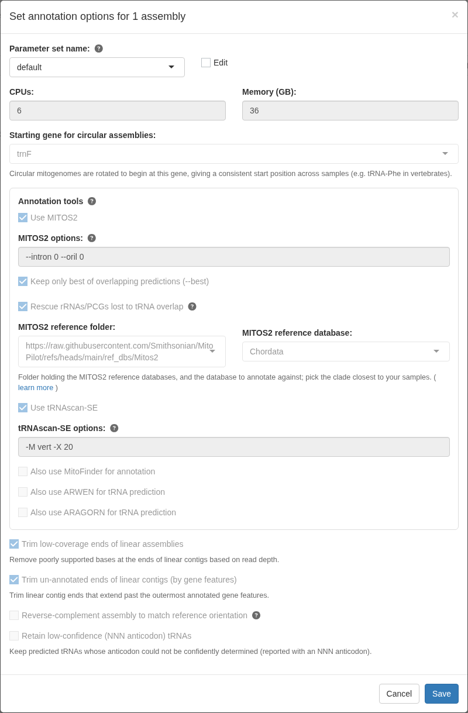
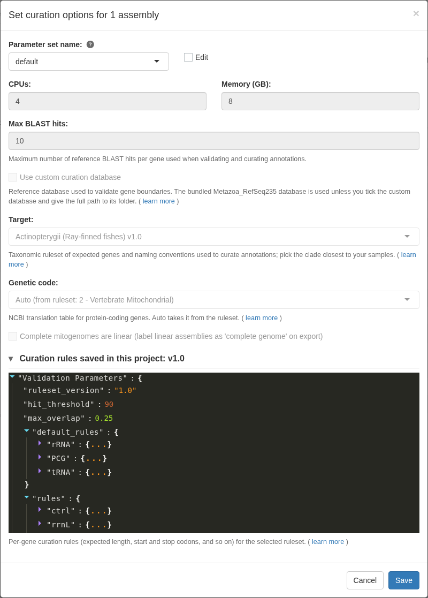
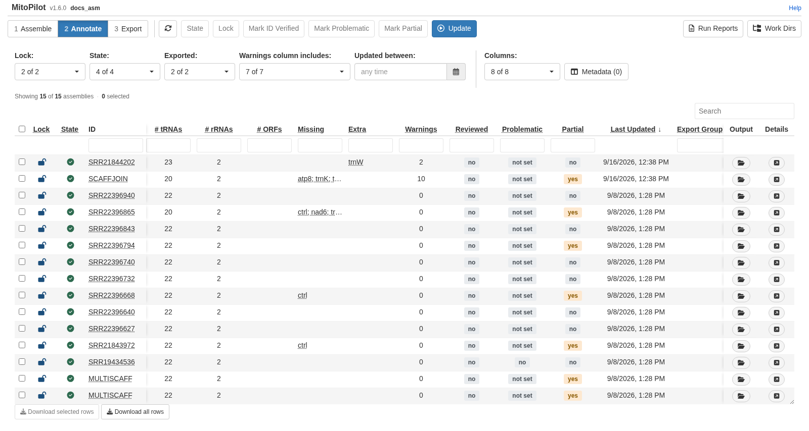
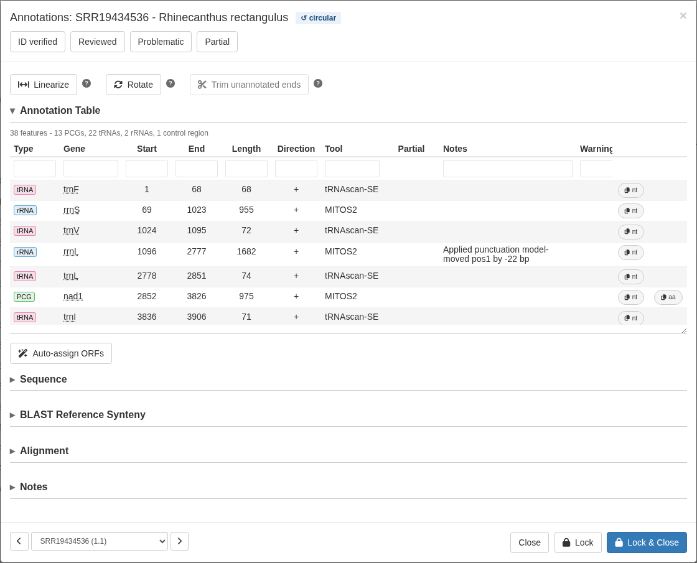
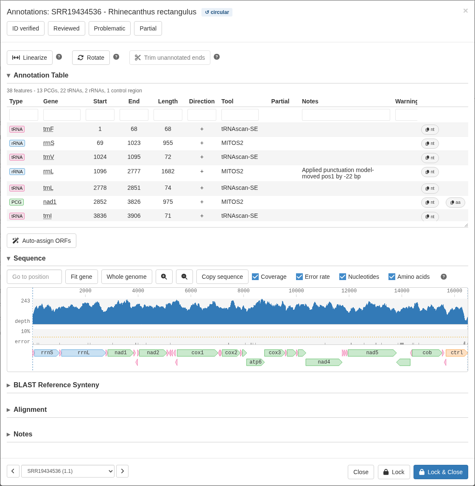
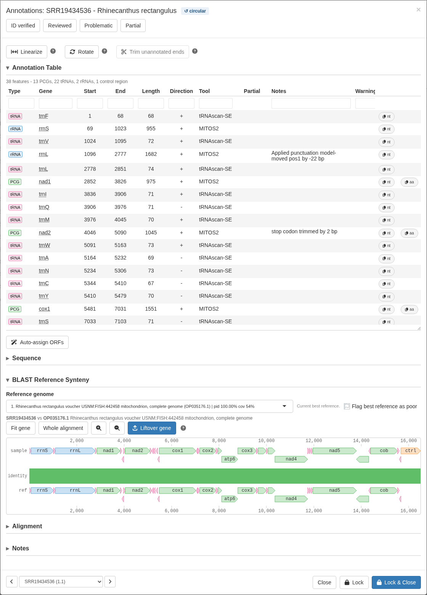
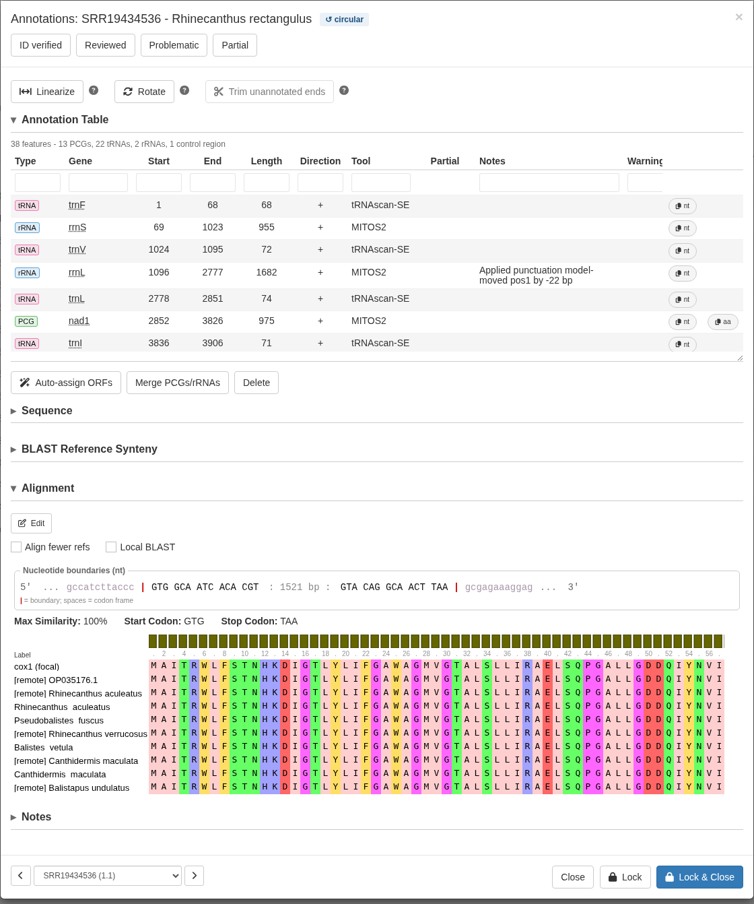
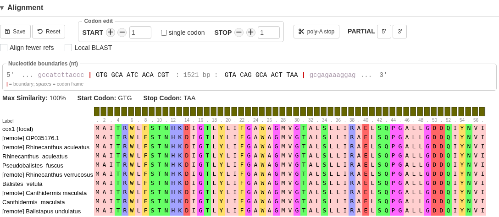
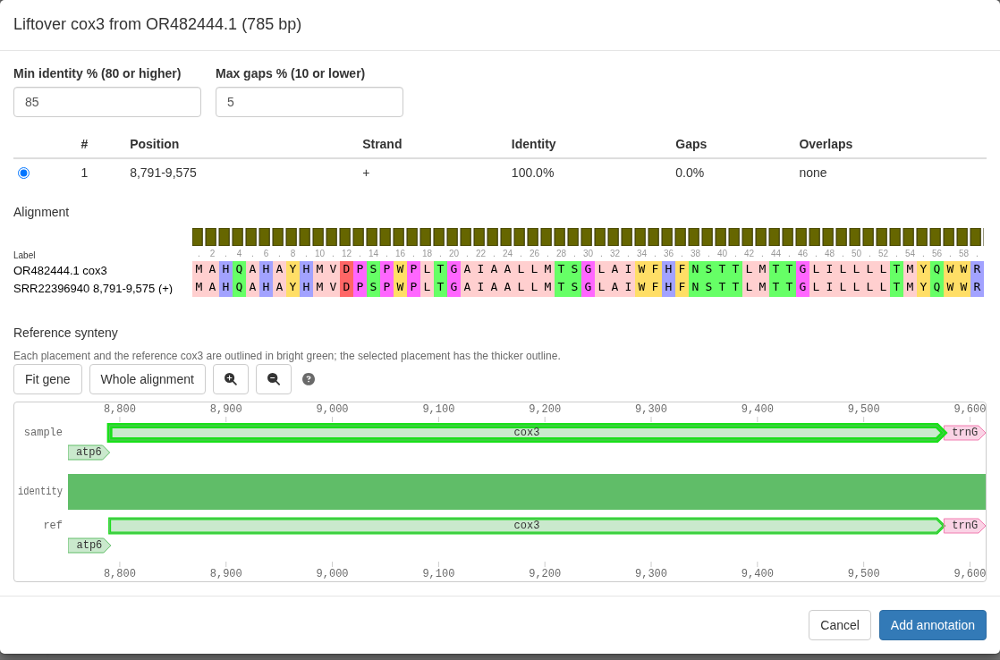

Test Project: Annotate
Test project: 0. Initialize 1. Assemble 2. Annotate 3. Export
This module finds the genes, curates the gene models against reference sequences from GenBank, and validates the result against rules for your taxonomic group. It attempts to flag any issues that would cause a rejection during GenBank submission.
Each row here is one assembly, not one sample. A sample that kept several scaffolds or paths will be represented by several rows, and each is annotated and validated on its own.
Set the options
Annotate Opts. controls the annotation tools.

Genes come from MITOS2 (protein-coding genes, tRNAs, and rRNAs) and tRNAscan-SE (tRNAs), with MitoFinder, ARWEN, and ARAGORN available as optional annotators. The MITOS2 reference database defaults to Chordata, but Metazoa_RefSeq89 is the general-purpose choice for other groups. The defaults suit most vertebrates. For other clades, or when genes come back missing or on the wrong strand, see handling difficult annotations for which settings to change.
Curate Opts. controls what MitoPilot does with those raw annotations.

The setting that matters most is Target, the taxonomic ruleset. It sets the expected gene content, the allowed start and stop codons, the naming conventions, and the genetic code. It defaults to Actinopterygii, which is correct for the test fishes.
For your own data, pick the closest clade from the ruleset browser. Expand Curation rules for this ruleset to see the validation parameters, which are the ruleset itself, laid out so you can see exactly which rules an assembly is being judged against.
ORF Opts. controls an optional search for open reading frames (ORFs) that the annotation tools did not report.
It is off by default, and the test fishes do not need it. Tick Run ORF finder step to have NCBI ORFfinder scan the unannotated regions of each assembly after curation. Three settings shape what it reports:
- Min ORF length (nt): the shortest ORF reported (default 300).
- Max overlap w/ existing annotations: how much of an ORF may overlap a gene that is already annotated (default 0.1, or 10% of the ORF’s length).
- Include nested/overlapping ORFs: also report ORFs inside or overlapping another ORF, not only the longest one in each region.
The genetic code comes from the curation ruleset. Each ORF found is added as a new row in the annotation table, where Auto-assign ORFs can name the ones that match a known gene. See handling difficult annotations for when this helps.
No ruleset for your samples? If you do not see an appropriate clade for your samples, please post an issue or reach out to Dan MacGuigan directly at macguigand@si.edu. We are always looking to expand the taxonomic scope of MitoPilot.
When ready, click Update and run the workflow the same way you ran Assemble.
This module is slower than Assemble. MITOS2 takes a few minutes per assembly, and curation aligns every protein-coding gene against reference sequences. When working on a computing cluster with your own project, consider running this step as a job rather than directly from the MitoPilot app.
Read the results

Scroll right in the table for the columns that matter:
- # PCGs, # tRNAs, # rRNAs: how many of each gene type were annotated. For a vertebrate mitogenome you expect 13, 22, and 2.
- Missing: expected genes that were not found.
- Extra: genes annotated more times than the ruleset expects.
- Warnings: how many validation flags were raised. This is your work queue.
A few assemblies stand out in the test project. For example, SRR21844202 has an extra trnW and two warnings.
SCAFFJOIN is missing atp8, trnK, and trnL and carries ten warnings. This is a real consequence of joining scaffolds across coverage gaps. The sequence in those gaps is set to “N”, so the genes in those gaps cannot be annotated.
Note. The Warnings column includes dropdown menu at the top filters which warning types are counted. Narrow it to one warning type to pull out every assembly with that problem and work through them as a batch.
Inspect a sample
Click Details on any row. Here we’ll look at sample SRR19434536.

The annotation table lists every gene with its position, strand, and the tool that called it. The Notes column records changes made during automatic curation, such as a start position moved upstream or a stop codon trimmed. Warnings shows what validation flagged. The nt and aa buttons copy the nucleotide or amino acid sequence to your clipboard.
The badge beside the title shows the topology. The four buttons under it, ID verified, Reviewed, Problematic, and Partial, are flags: click one to set or clear it. A flag that is set is filled in. This is how you keep track of what you have already looked at across a large project.
Below the table are four collapsible sections: Sequence, BLAST Reference Synteny, Alignment, and Notes.
Sequence shows the assembly itself: read depth and per-base error rate along it, the genes as arrows in lanes below them, then the nucleotides and the translated amino acids of each protein-coding gene once you zoom in. Each track can be hidden with its checkbox. Error rate bars turn orange above 5%, a sign of possible sequencing or assembly errors. Click a row in the table to jump to that gene, or use Whole genome to step back out. The view follows every edit you make in this window.

BLAST Reference Synteny lines your annotation up against the closest GenBank mitogenome, with a percent-identity bar between them. Drag or scroll sideways to pan and scroll or pinch to zoom; zoomed in far enough, the bases of your sample and the reference appear with mismatches and gaps coloured. Click a gene in the sample track to select it in the table. Click a gene in the reference track to zoom to it, then use Liftover to copy it to your assembly; see Add a missing gene from the reference.
The reference mitogenome shown in this plot is recorded in the export’s sample_info.csv in the ref_accession column, as its GenBank accession number. It is not written to the FASTA headers. If the reference mitogenome is a poor match, you can flag it (the CSV column is then left blank) or use the dropdown menu to pick a better reference from among the top BLAST hits.

Alignment shows a selected protein-coding gene aligned to its reference hits and the curation database.

The nucleotide boundary box shows the exact sequence at each end of the gene with the codon frame marked, along with the start and stop codons that were called. Below it, the protein alignment shows your gene (“focal”) alongside the reference proteins.
Notes is a free-text box for recording what you did. It saves automatically and is kept with the assembly.
Manually fix annotations
If many assemblies share the same problem, change a setting and re-run before editing by hand; see handling difficult annotations. Re-running replaces manual edits, so do it first.
Click Edit in the alignment section to nudge the start or stop position and watch the alignment respond.

By default, the + and - buttons search for the next valid start or stop codon (according to the curation ruleset you selected). You can tick the single codon checkbox to instead nudge the position one codon at a time. This can lead to a partial gene model with undetermined start or stop codons.
Clicking the poly-A stop button will truncate a stop codon to TA or T. Sometimes this is required by GenBank to avoid overlapping gene models. When transcribed, these genes will have their stop codon completed by the addition of the 3’ poly-A tail.
You can manually set a gene to have an undetermined start or stop codon by clicking the Partial 5' or 3' buttons. MitoPilot will add the appropriate format and notes for that gene in the GenBank submission files. Best to use this sparingly, as GenBank may not accept a submission with many “partial” gene models.
Other useful editing tools:
- Merge PCGs/rRNAs joins gene models that were split into separate pieces, which is how you handle spliced or fragmented genes.
- Auto-assign ORFs renames open reading frames found by ORFfinder based on sequence similarity with the curation database of protein-coding genes.
- Delete removes an annotation entirely. Bring back a deleted annotation using the Restore button.
- Trim unannotated ends cuts assembly overhang that carries no genes, can be undone.
- Rotate rotates a circular assembly to start on a feature you pick. Picking a feature on the minus strand also reverse-complements the assembly, after a warning. Restore assembly undoes it.
- Linearize converts a circular assembly to linear, useful when the control region assembled poorly.
- Align fewer refs in the Alignment panel speeds up editing by restricting the alignment to the top five hits, which matters because the alignment is recomputed on every start/stop codon nudge.
Add a missing gene from the reference
If the annotator missed a gene that the closest reference has, you can copy it over. Open BLAST Reference Synteny and click the gene in the reference track. The plot zooms to it and the blue Liftover button next to the zoom buttons takes on the gene’s name. Click it to find where that gene sits in your assembly.

The table lists up to three placements, best first, with position, strand, identity, gaps, and any existing genes the placement overlaps. Pick one to see the reference gene aligned to it. tRNAs and rRNAs are shown as nucleotides; protein-coding genes are shown as protein when the placement starts with a valid start codon. The synteny view outlines the reference gene and every placement in bright green, with the selected placement drawn thicker.
Two boxes set the quality cut-offs: Min identity % (default 85, never below 80) and Max gaps % (default 5, never above 10). Placements that miss the cut-offs are greyed out and cannot be chosen.
Click Add annotation to add the placement as a new row. The tool is recorded as the reference accession plus _liftover, and the notes record the identity and gaps. If the placement overlaps an existing gene by more than a quarter of either gene’s length, or your sample already has a gene with that name, you are asked to confirm first.
Some limits to keep in mind:
- tRNAs are curated in the app right away. Protein-coding genes and rRNAs are curated through a short Nextflow run on your own computer, using the container (or no-container install) set in your project’s
.config. It usually takes under a minute; the first time also downloads the curation database into a.liftoverfolder in your project. You can cancel while it runs, and nothing is added. If curation fails, you are told why and can add the gene with a “curation skipped” warning. - The new gene copies the strand of the reference gene, so a strand error in the reference record carries over. Check the strand against the neighboring genes in the synteny view.
- Deleting a lifted-over gene removes it for good; there is no Restore. Lift it over again to bring it back.
- Control regions and genes split into several pieces in the reference cannot be lifted over.
You can record what you did in the Notes section; it saves automatically and is retained with the assembly.
Warning. Validation warnings do not disappear when you fix the underlying problem. They record the state at the time the Annotate module ran. Use the Reviewed toggle to track what you have actually dealt with.
Lock and move on
When you are satisfied, select the assemblies and click Lock to release them to the Export module.